فيديوهات لا تنتهي،
وأصدقاء ينتظرونك
Drift تطبيق خفيف وممتع. قبل أن تحمّله، تعرّف على كل ما فيه: الخلاصة والأصدقاء والبيت والحديقة والمتجر والمكافآت. وزر التحميل ينتظرك في آخر الصفحة.

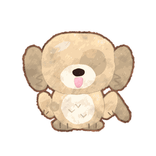

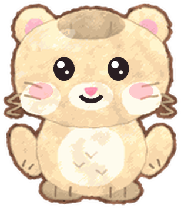


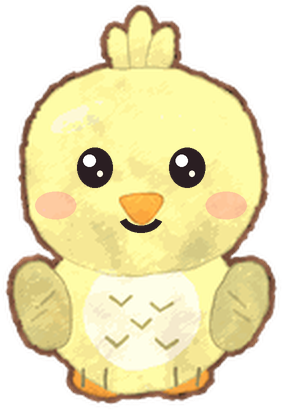
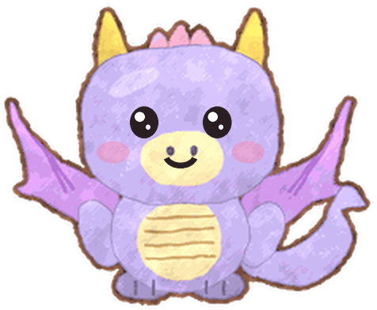
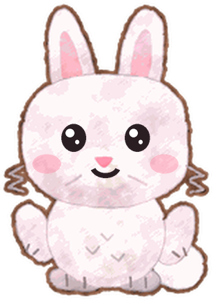
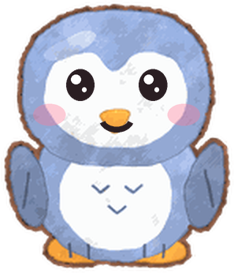
خلاصة لا تنتهي
تفتح التطبيق فتجد فيديوهات قصيرة جاهزة، تمرّر للأعلى فيأتيك التالي فورًا. تتحكم بالسرعة والصوت والتشغيل التلقائي، ويتذكّر التطبيق ما تحبه ليقترح عليك المزيد منه.
- تمرير عمودي سريع بين المقاطع
- سرعة تشغيل وصوت وتشغيل تلقائي
- إعجاب وحفظ ومشاركة وتعليقات
- وضع تدوير الشاشة وإخفاء الأزرار للمشاهدة الكاملة
تحديات وأسئلة بين المقاطع
بين الحين والآخر يظهر لك تحدٍّ سريع أو سؤال ثقافي تجيب عنه وتربح عملات. أسئلة تبدو صعبة لكنها ممتعة.
- أسئلة منوعة وتحديات قصيرة
- جوائز من العملات عند الإجابة
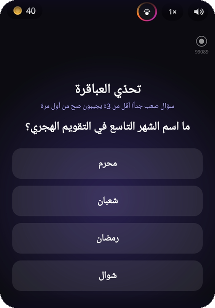
أصدقاؤك الافتراضيون
19 صديقًا مختلفًا: قطة وكلب وثعلب وباندا وتنين ووحيد قرن وغيرهم، ولكل صديق 7 ألوان. تتبنّاهم وتعتني بهم، ولكل واحد قصة صغيرة تتعرف عليها.
- تطعمهم وتلاعبهم وتحمّمهم
- قبعات ونظارات وأوشحة لتزيينهم
- تتغير حالتهم: جوع وسعادة ونظافة
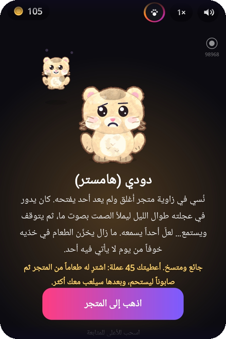
بيت أصدقائك
غرفة دافئة يتحرك فيها أصدقاؤك بحرية. تضع لهم أسرّة وألعابًا وأدوات، وتراهم ينامون ويلعبون ويتحدثون معك.
- غرفة مرسومة بيد وإضاءة نهارية وليلية
- أسرّة وأدوات استحمام وألعاب
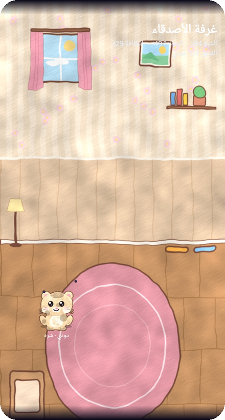
الحديقة
ازرع بذورًا في الحقول وانتظرها لتنمو، وأصدقاؤك يلعبون بين الأحواض. المحاصيل تُطعم أصدقاءك أو تزيّن الحديقة.
- حقول بذور ونمو مع الوقت
- محاصيل للطعام والزينة
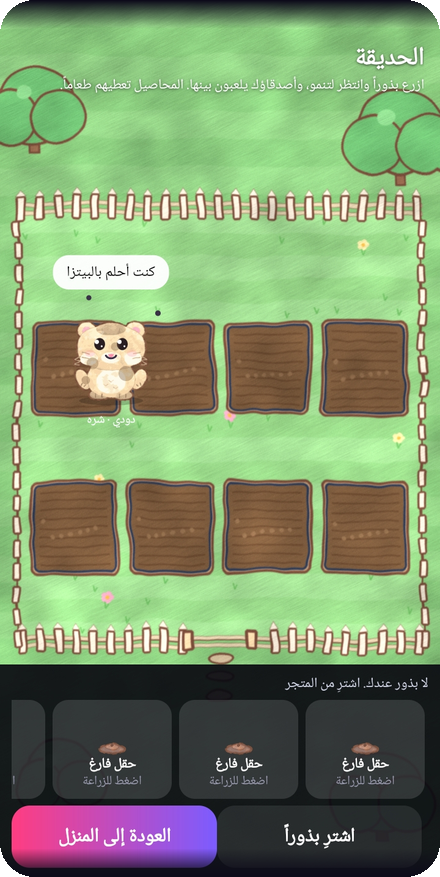
البحث والترندات
ابحث عن أي موضوع، أو اضغط على ترند رائج وسيمتلئ فيدك بما يخصه فورًا. الترندات مقسّمة إلى فئات لتصل لما يهمك أسرع.
- بحث حر وعمليات بحث سابقة
- ترندات حسب الفئة: ألعاب، ضحك، طبخ، رياضة…
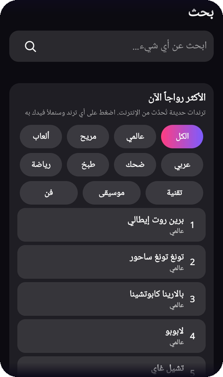
المتجر
اصرف عملاتك على أصدقاء جدد، وقبعات ونظارات وألوان، وطعام وألعاب، وبذور للحديقة، وقلوب بتأثيرات خاصة، وثيمات تغيّر ألوان التطبيق كله.
- أصدقاء وأسرّة
- ملابس وإكسسوارات
- طعام وألعاب وعناية
- ثيمات للتطبيق
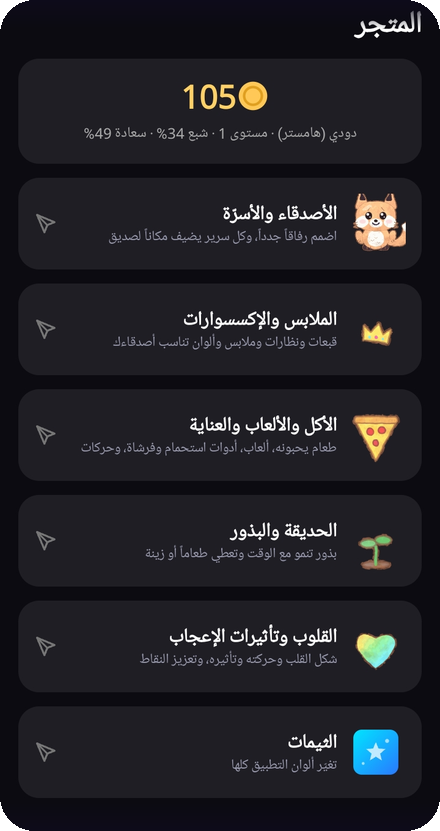
وهناك المزيد
تتحكم بكل شيء: شدة المحتوى ونسبة المفاجآت، اهتماماتك وما تريد إيقافه، كلمات تفضّلها وكلمات تحجبها، طول الفيديو واللغة، التمرير والصوت والسرعة، وإظهار الأصدقاء أو إخفاؤهم.
مكافأة يومية تكبر كل يوم، وعجلة حظ بدورة مجانية يوميًا، ومهام قصيرة بجوائز، وأوسمة تجمعها كلما تقدّمت.
ثماني جوائز من 5 إلى 100 عملة. لفّة مجانية كل يوم ولفّات إضافية بعملاتك.
مسلسلات قصيرة تُعرض حلقة بعد حلقة بالترتيب، وتكمل من حيث توقفت، مع زر الحلقة السابقة وتقديم وتأخير 10 ثوانٍ.
صناديق هدايا تظهر أثناء التصفح فيها عملات أو أصدقاء نادرون.
لا حسابات ولا تتبّع ولا إعلانات. كل شيء يبقى على جهازك.
وصلت إلى النهاية 🎉
الآن أنت تعرف كل شيء. التحميل مجاني ويستغرق ثوانٍ.
⬇ تحميل Drift